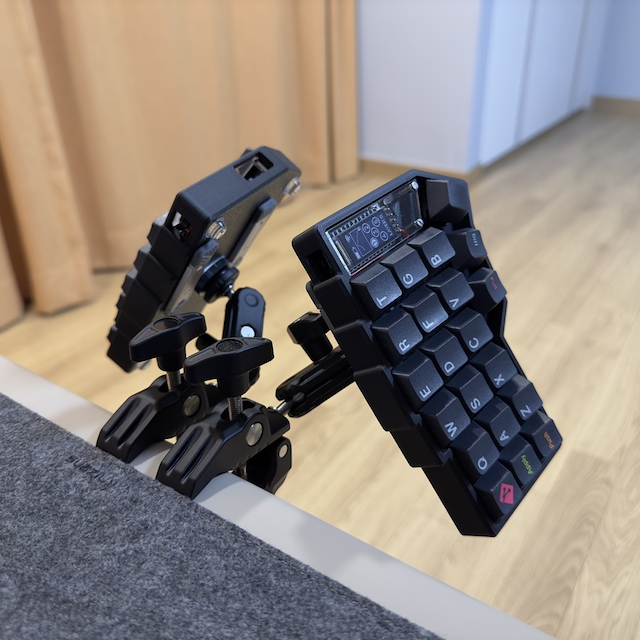

I use Arch by the way
Arch Linux caught my attention because it's known as one of the
hardest distros to install.
Also it uses the package manager called "Pacman" which has a lot of
packages or "programs" available in latest version
Hyprland. Or hype...r land
Hyprland is a tiling window manager that manages windows to use
your screen space efficiently.
By default, it maximizes a single window, and when multiple are
open, it arranges them like tiles.
You can configure it to add gaps between windows or at the edges to
enhance visual aesthetics.
With the concept of workspaces, you can assign apps to specific
workspaces, making navigation easier compared to using
Alt+Tab.
Kitty
Terminal emulator that can be used in desktop environment.
Which you can customize such as font, color or opacity of the
background and that kind of customization makes working with the
terminal so much better. Specially when working with Unix or Linux
machines since there is a lot of times you can or should use the
terminal.
Additionally with kitty you can view images directly from terminal
and supports ligautre, a nice quality of life improvements which
can't be done with other terminals such as iterm2 or Alacritty. And
a feature that I really like is a cursor-trail effect kind of like
cursor-trail on the Windows since you don't use mouse on
terminal.
TMUX
Terminal Multi Plexer let's you create multiple terminal session
and inside each sessions you can open a windows and separate them
into panes.
Which means you can open up more then one terminal in a single
instance of terminal. For example if you open up live-server to view
a HTML file and have a need to go to some other directories with
TMUX just open new session, window or a pane, do some work there,
come back to where you've just left it.
In my case more specifically. I open python file with NeoVim at the
pane on the left and run nodemon(a terminal application that can run
a program when change is detected). So whenever I update the python
scripts and save the changes I can see what happened on the right
side of the pane. Nice and convenient.
NeoVim
Terminal text editor. Not just a code editor but with the Vim
motions.
With vim motions you might not be fast just for using it but get
faster by being more accurate compare to when using mouse.
You can move around the file with h,j,k and l. If you want to type
something go into "Insert mode" with i key. To change the word with
the cursor in it? use "ciw" which you can take it as "Change Inside
Word".
And and there is so much more that let's you move around and edit
code faster and accurate ever before.
Split keyboards

Keyboards for real nerds — split in half so you can position them to
match your shoulder width and wrist angle. The keys are arranged in
a collinear layout, making it ergonomic all the way down to your
fingertips, helping you avoid future medical issues.
The keyboard shown in the image is a "Corne" keyboard with 42 keys.
It uses layers similar to the Shift key to access additional keys
not visible on the surface. By keeping the layout compact, every key
is no more than one unit away, making touch typing effortless.